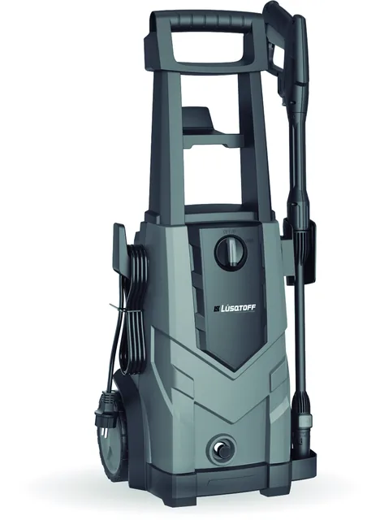

154 bar.
¿Y qué limpia eso?
Máxima vs. trabajo
El número grande es el
máximo permitido.
El que limpia es el de trabajo.
máximo permitido.
El que limpia es el de trabajo.
Lüsqtoff HL100-8“150 bar máx.”
Lüsqtoff HL-120“105 bar máx.”
Fichas y manual oficiales Lüsqtoff. La presión máxima es el corte del presostato, no la que sostiene la boquilla.
Y los bar solos no alcanzan
Sin caudal, la presión
es media ficha.
es media ficha.
Bosch GHP 180 · trabajo
0 bar
Sostenida en boquilla. Máxima: 124,5 bar.Bosch GHP 180 · caudal
0 L/min
Nominal continuo (240 L/h).“154 bar anunciados” sin condición de trabajo ni caudal no ordena ninguna comparación.Criterio de la guía: misma condición de servicio, misma superficie.
Comparativa
Presión de trabajo,
caudal y accesorios.
caudal y accesorios.
Modelo por modelo, con la ficha enlazada y lo que falta confirmar, señalado.
Ver hidrolavadoras →
tallerlab.com.ar/hidrolavadoras/comparativa-general/